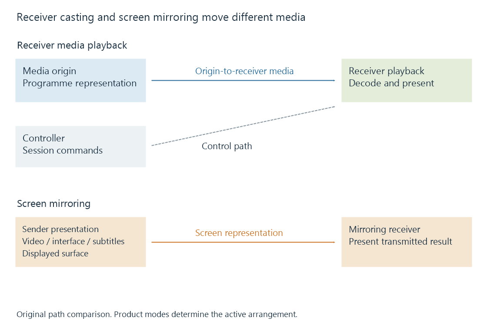

Casting and screen mirroring: where playback happens
Casting and screen mirroring send presentation to another device through different media paths, with receiver playback or sender-screen transmission changing resource and processing requirements.
Casting often makes one device a controller for playback on another. Screen mirroring sends a representation of the sender's displayed surface to a receiver. Both put a picture on another screen, but they can move media through different paths.
Identifying that path explains which device needs the codec, where subtitles are rendered and which connection carries most of the media traffic.
Receiver playback can leave the phone out of the media path
In a typical media-casting arrangement, the controller tells a receiver what to play. The receiver then obtains the programme resource from its origin and performs playback.
An Emby phone app can act as the controller while Emby Server delivers the selected representation to the receiver. The phone's ability to play the original source does not establish the receiver's compatibility.

Mirroring includes the sender's presentation
Screen mirroring captures or otherwise produces a representation of the sender's displayed surface. The receiving device presents that transmitted result.
A movie originally encoded in one format can therefore be decoded on the sender, composed with its interface and subtitles, and transmitted as another representation. Scaling, display timing and the mirroring path can affect what reaches the larger screen.
| Property | Receiver media playback | Screen mirroring |
|---|---|---|
| Primary media preparation | Receiver's selected media path | Sender presentation plus mirroring path |
| Content represented | Programme resource and selected features | Sender's displayed surface |
| Subtitle handling | Receiver or delivered subtitle/video path | Can be part of the captured displayed result |
| Sender activity | Controller lifecycle | Ongoing screen/presentation source |
This comparison describes two arrangements. Products such as AirPlay offer multiple modes, so the visible brand or output button alone does not establish which arrangement is active.
A picture-quality change needs a path explanation
If an Emby cast receiver needs a lower-rate compatible representation, the server can change the delivered media. That is different from mirroring a high-resolution source after the phone has already scaled it into a smaller displayed surface.
Likewise, a mirrored subtitle visible on the phone can appear as pixels in the transmitted screen. Receiver playback can instead select a separate subtitle rendition or require burn-in based on the receiver's capabilities.
Recording the actual source, selected tracks and receiving mode makes those differences understandable.
The sender's lifecycle follows its role
A receiver pulling media can continue independently of individual controller interactions, subject to its application/session policy. A mirroring path needs its active sender presentation.
A controller disappearing can still end a receiver session if that receiver's policy says to stop. Continued playback after a phone screen turns off is therefore evidence about a particular session, not a universal rule for all casting.
Controller and receiver connectivity separates discovery, control and media retrieval so each route can be examined directly.
See Also
- Google Cast and receiver-side media playback
- AirPlay media presentation and screen mirroring
- DLNA media playback and UPnP AV roles
- Playback remote control and reported session state
- Controller and receiver connectivity
- Track selection and playback plans